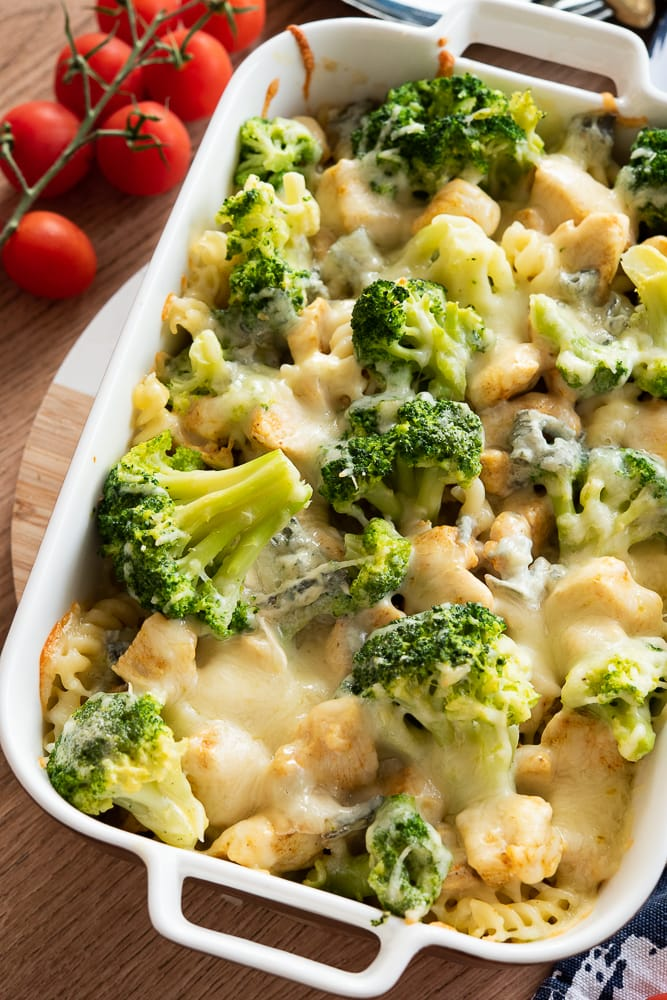

Zapiekanka makaronowa z brokułami i kurczakiem

- 300g makaronu
- 2 piersi z kurczaka
- 1 główka brokuła
- 2 ząbki czosnku
- 1 cebula
- 200g makaronu penne
- Rozgrzej piekarnik do 180°C.
Ugotuj makaron według instrukcji na opakowaniu, dodając na 2-3 minuty krócej, niż zaleca producent, ponieważ makaron będzie jeszcze pieczony w piekarniku.
W dużym garnku osolonej wody blanszuj brokuły przez około 2-3 minuty. Następnie odcedź je i przełóż do miski z zimną wodą, aby zatrzymać proces gotowania. Odstaw na bok.
- W rondlu rozgrzej masło lub oliwę z oliwek. Dodaj posiekaną cebulę i czosnek, smaż przez kilka minut, aż będą miękkie i lekko zrumienione.
Dodaj pokrojone piersi z kurczaka i smaż, aż będą dobrze przypieczone ze wszystkich stron.
Następnie wsyp mąkę i mieszaj przez minutę, aby mąka zaczęła się lekko rumienić.
Stopniowo wlej mleko, ciągle mieszając, aby uniknąć powstawania grudek. Gotuj, aż sos zgęstnieje.
Dodaj starty ser, sól, pieprz, oregano i tymianek. Mieszaj, aż ser się rozpuści i sos będzie gładki. Zdejmij sos z ognia.
- W dużym naczyniu żaroodpornym połącz ugotowany makaron, blanszowany brokuł, sos kurczakowy. Delikatnie wymieszaj, aby wszystkie składniki się połączyły.
Posyp wierzch zapiekanki bułką tartą.
Wstaw naczynie do rozgrzanego piekarnika i piecz przez około 20-25 minut, aż bułka tarta będzie lekko zrumieniona, a zapiekanka będzie dobrze podgrzana.
Po upieczeniu wyjmij z piekarnika i pozostaw do lekkiego ostygnięcia przed podaniem.
Powrót do Strony głównej